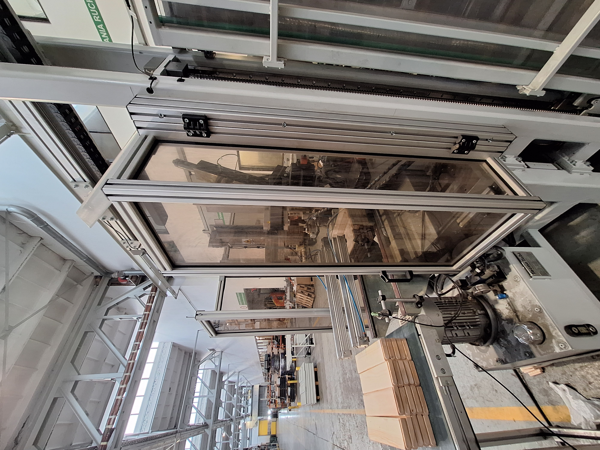
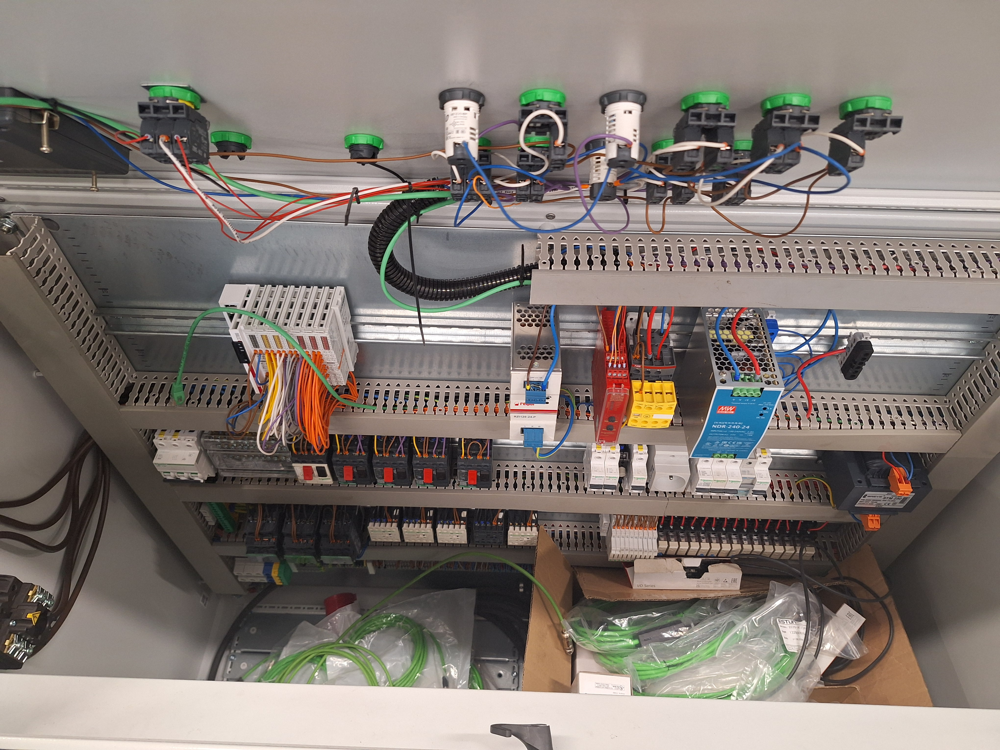
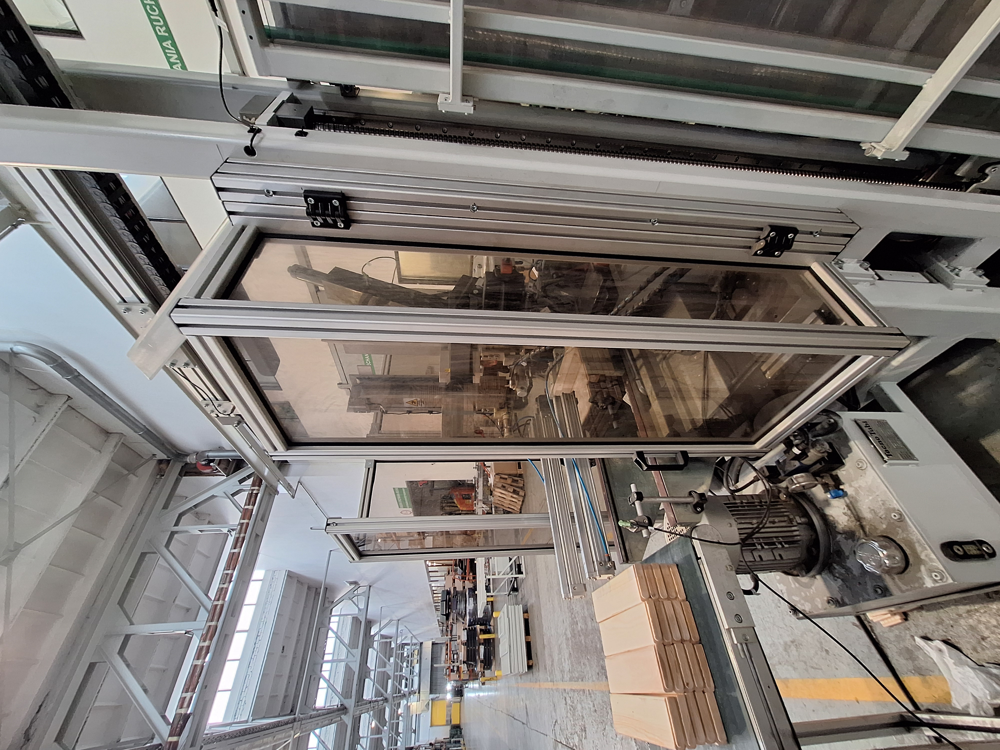
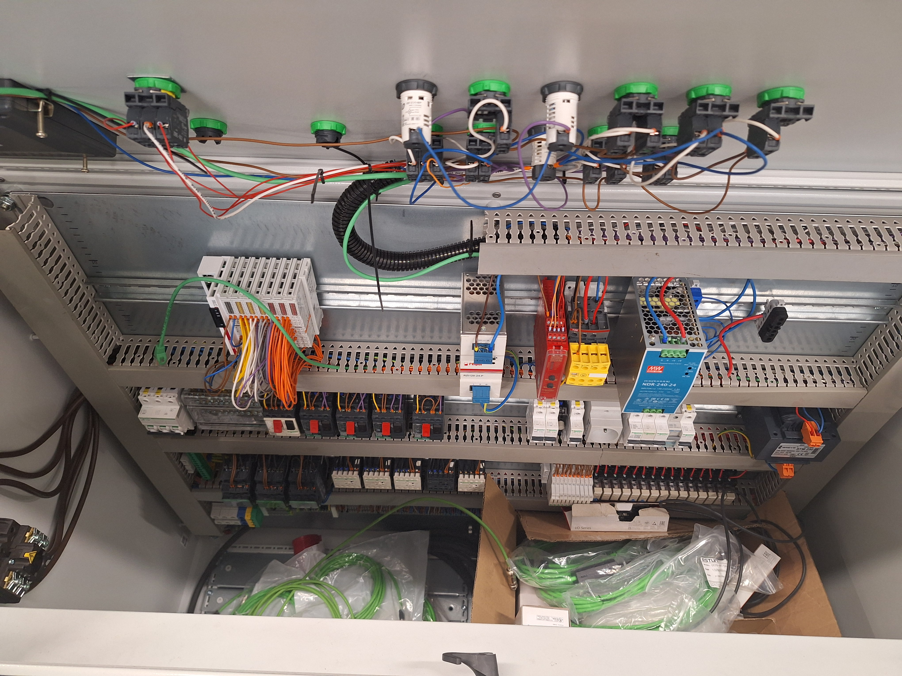
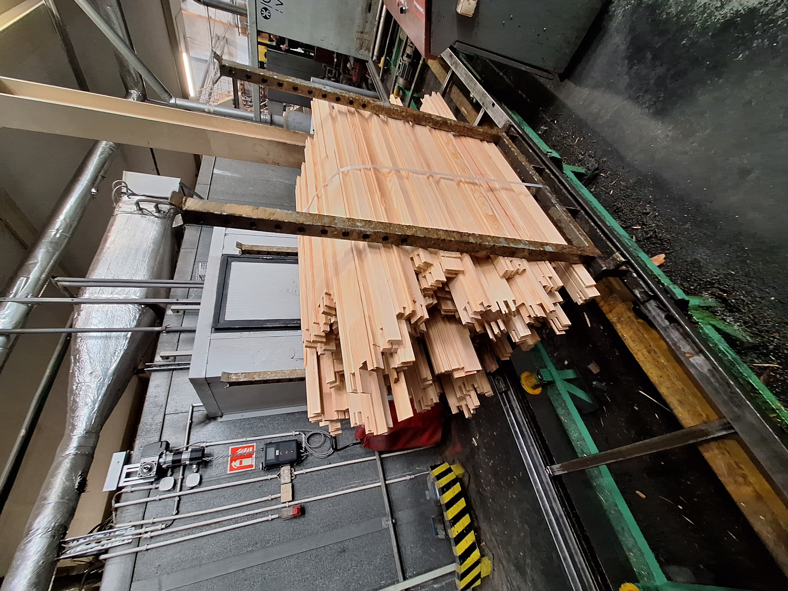
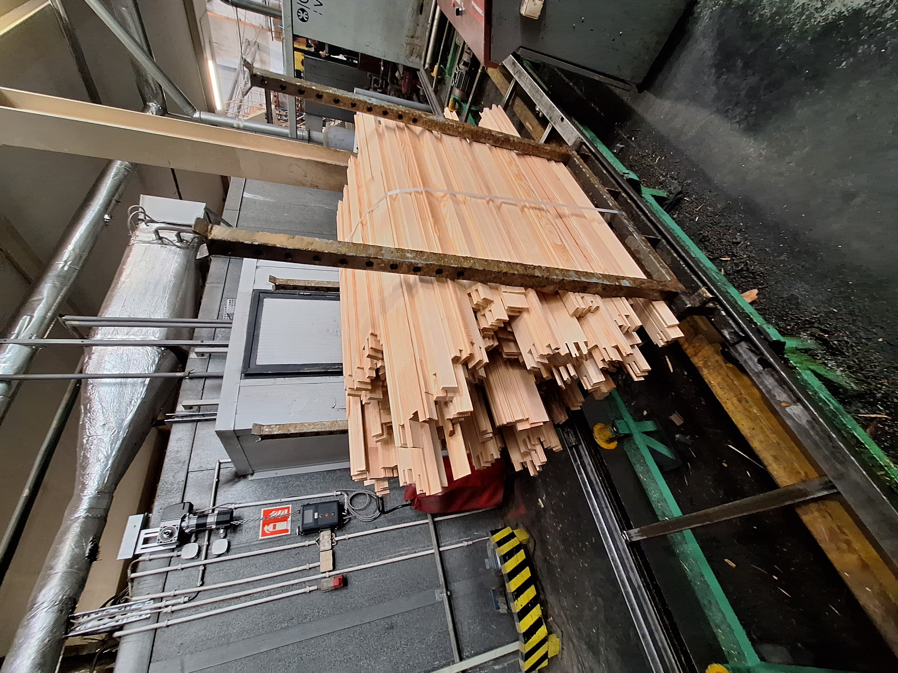

Automatyzuję maszyny – od schematu po uruchomienie
Programuję sterowniki PLC, tworzę panele HMI, wizualizację, monitoringi maszyn , mediów oraz uruchamiam linie produkcyjne. Pracuję głównie na Beckhoff TwinCAT 3.
Aktualnie stawiam na rozwój w zakresie systemów SCADA, monitoringu przemysłowego oraz analityki danych.
-
Java
InfluxDB
Grafana
Apache Kafka
Umiejętności techniczne 🛠️
Programowanie PLC:
TIA Portal (S7‑1500), TwinCAT (Beckhoff)Panele HMI
Weintek EasyBuilder Pro, BeckhoffE-CAD
EPLAN Electric P8, QElectrotechSieci przemysłowe:
EtherCAT, Modbus TCP, OPC UA, MQTTSCADA:
Kafka Apache, podstawy SCADA (Ignition)Frontend, 3D
HTML, CSS, JavaScript, Three.jsVersion Control
Git & GitHubMonitoringi / SCADA
Aplikacje
Monitoring energii zakładu
Zbieranie danych w Indlux db oraz MQTT broker, wizualizacja SCADAWizualizacja danych z kotła
Influx db + Modbus TCP + GrafanaMonitoring przepływu gazów
Influx db + Modbus TCPMonitoring temperatury
Influx db + MQTTMonitoring maszyn
Influx db + MQTT/ADS/ModbusTCPTime‑lapse z uruchomienia linii 🚀
Galeria


 



{kind=link}
{kind=link}
 

{kind=link}